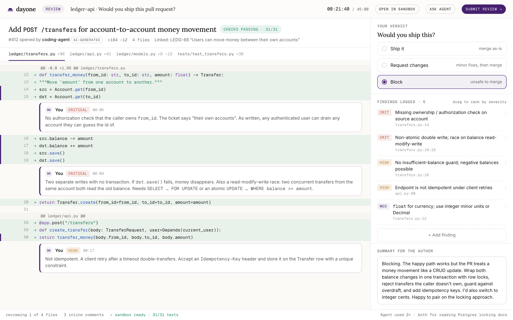

Dayone scenarios put you on a real team with a real problem: a latency regression, a suspicious PR, a page at 2 a.m. You get the codebase, the telemetry and an AI coding agent. Afterwards you get the full answer key and a breakdown of how you worked.

p95 jumped from 250 ms to 1.8 s with a flat error rate. You have logs, metrics, a load test and a Java monolith.
A coding agent added money transfers. Tests pass. Find what's wrong, rank it, decide.
No deploys, no incidents. A warehouse, flag history, and three chat threads, one of them wrong.
A page, a dashboard, a stale runbook, a stakeholder asking for an update. Mitigate first.
Coverage is 70% and CI is green. Harden the suite so it would have caught the bug, then find it.
A React dashboard that janks on scroll. Profiler, flame charts, and a fix that has to survive a design review.
A coding agent is built in. Using it well is part of the assessment; not using it is not penalised, but you'll be working harder than you need to.
Edits, commands, test runs and prompts inside the workspace. No webcam, no screen capture, no keystroke biometrics. Ever.
Reproducing before editing, stating a hypothesis, rejecting a wrong AI fix with a reason, verifying your change: these are scored. Running out of time with a clear diagnosis is a fine result.
After the company shares its decision, you receive the same dimensions and key moments they saw, plus what to work on. You can dispute a score. You can delete your data.
Extended time, screen-reader mode, alternative theme, split sittings across days. Request from the invitation page.